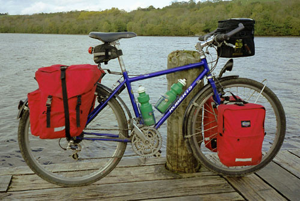
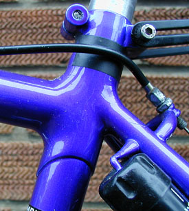
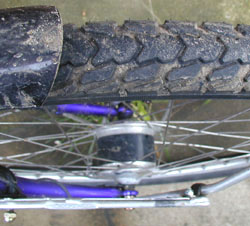
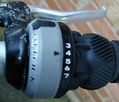
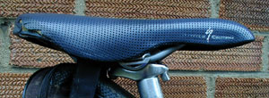

Roberts Rough Stuff long term test

The Roberts Rough Stuff is an expedition touring bike. It is meant to
be very tough and to be able to withstand off-road excursions, as long
as they aren't too technical.
This is a review of my own bike, and I have chosen every single bit of
equipment on it. Thus you'll find some unusual things in its
setup. With any amount of luck I'll be able to justify them.
Frame
The most obvious feature of the Rough Stuff frame is that it looks
like a mountain bike frame. It takes 26" MTB wheels and has a sloping
top tube. It is meant to handle off-road better than your standard
touring bike, but it is by no means a simple mountain bike.
There are several significant differences between this and a mountain
bike frame. First, the bottom bracket is quite low, 26cm off the
ground. This allows a low center of gravity for the rider, making for
a more stable ride. Second, the fork is made with traditional methods
rather than the ubiquitous unicrown found on MTBs. In addition it is
just long enough to hold the wheel and allow mudguard clearance, and
no longer. Most rigid MTBs come with extra-long "suspension ready"
forks, allowing a swap to suspension forks without upsetting the
geometry of the fork. Roberts assumes that if you're interested in
expedition touring you won't want a suspension fork, so he doesn't
make allowances for the swap. Third, the chainstays are quite long to
allow a stable ride and to allow the use of large rear panniers
without catching the rider's heels.

The frame is custom built for me. It is made from Columbus
Nivacrom, a fairly high-class steel. The tubes are slightly oversized
and have thicker walls than the usual steel bike. This is for a bit of
added stiffness and crash resistance. I haven't crashed much with it,
but I can comment on the stiffness. My previous touring bike was made
of Tange cromoly using a lightweight, small-diameter tubeset. When it
was loaded with touring gear I couldn't stand up to pedal because the
frame would flex alarmingly. The Roberts has enough lateral stiffness
to prevent this.
The tubes are fillet brazed, resulting in very smooth looking
joints. Fillet brazing is used instead of lugs because the top tube is
sloping, and appropriate lugs aren't available. The paint (in a lovely
shade called flamboyant blue) seems durable enough, only chipping with
sizable impacts.
Braze-ons abound. There are three water bottle mounts, and large water
bottles can be used in the two on the interior of the front triangle
despite the small size of the frame. The bottle cage on the seat tube
straddles the front derailleur clip in order to allow this.
The angles of the bike are fairly slack. I can get the seat nicely
back while putting the seat clamp in middle of the saddle rails.
The top tube is slightly longer than I wanted it. I asked for a 50cm
top tube, but Roberts made it 51.5cm. He said that with the shorter
top tube I wouldn't have space to put a really big tire on it. I'll
have more comments on this below.
Wheels

The most obvious feature of the front wheel is the Schmidt hub dynamo
at its center. A dynamo is a very practical way to provide light while
touring, as you don't need to worry about batteries, and the resulting
light is fairly bright. The Schmidt hub dynamo is the best made, with
low rolling resistance when the light is on and almost none when it's
off (see Chris Juden's Dynotest). There
are 36 double-butted (14/15/14 gauge) DT stainless spokes, and the
rim is a Mavic 517. While the spokes are ideal for the task,
the rim is not the best choice. This is Mavic's top of the line
cross-country racing rim, and the sidewalls are fairly thin. They
won't wear through too fast because the Rough Stuff will be used
mainly on the road. Nevertheless a better choice of rim would be
the Mavic 618, a cross-country rim with more metal in the sidewalls,
or even the cheaper X221.
The rear wheel has again 36 double-butted DT stainless spokes. The hub
is Shimano Deore XT and the rear rim is a Ritchey OCR Pro. OCR stands
for Off Center Rim, and it means that the spoke holes are offset
from the center line of the rim. When built up so that the holes are
offset towards the non-drive side, the drive-side spokes end up less
vertical and the non-drive side spokes a bit more vertical. This
braces the rim better, resulting in a stronger
wheel. See Strong Durable Bike Wheels for more
information. Like the front rim, the rear rim has fairly thin
sidewalls, but rims with offset spoke holes are not too common, so I
didn't have very much choice.
Equipment
The headset is a Stronglight Delta. This has nice needle bearings
and seems to work fine. One annoyance with it is that the locknut at
the top of the stack seems to be slightly smaller than 32mm, so you
risk rounding it if you use a standard headset wrench to adjust it. I
end up using a humongous adjustable spanner instead.
The bike has three chainrings and 8 cogs in back. I didn't even
consider a nine-speed setup because 9-speed chains are narrower and
weaker.

The shifters are SRAM Attack shifters. I used Gripshift style shifters
because I wanted the ability to trim the front derailleur, and Shimano
Rapidfire shifters don't allow this. The Attack shifters allowed me to
keep my trusty Deore XT derailleur; if I'd used one of SRAM's ESP
shifters I'd have to buy a new one. They seem to work
reasonably well, but I'm not completely happy with them. First, they
require a fair bit of effort to shift, and once you get them moving
they tend to keep shifting, so I often shift several gears at a time
when I only wanted to change one down or up. Second, they have a
fairly large diameter, and I find them uncomfortable to hold. Finally,
a good many of the numbers have worn off the shifters.
I have SRAM ESP 5.0 shifters on my Scott
Tigua. I like these much better. They use a 1:1 ratio (1mm of
cable pulled results in 1mm of rear derailleur movement) rather than
the 1:2 ration used in Shimano systems. It requires less effort to
shift the gears, and I have to turn the grip further to get it to
shift. Both of the factors result in easier shifting and less
overshooting. In addition, the diameter of the grip on the ESP 5.0
shifters is smaller, allowing a more comfortable hand position. I am
considering swapping the Attack shifters for ESP shifters, even though
it would require a new rear derailleur. One argument against this swap
is that if the SRAM derailleur breaks out in the middle of nowhere, it
might be very difficult to find a replacement, while Shimano spares
should be easy to find.
The seatpost is a nice two-bolt type that makes adjusting saddle
position a breeze. The rack is made by Topeak and is very sturdy,
although it should have included stainless steel mounting
hardware. The bolts included have gone quite rusty.
Gears
I have a non-compact MTB chainset on with 26-38-48 chainrings, and a
11-28 cassette. While this gearing is perfect for day rides without
luggage, they are higher than is desirable for touring. I often found
myself pedalling away in my lowest gear at low revs for long periods
of time while going up hills in Ireland. The 22-32-42 chainrings I had
while touring in Wales seemed
appropriate, so I may swap this chainset for a compact MTB one.
Comfort

The bike currently sports MTB flat bars. Initially I had it set up
with drop bars. However, I need a fairly upright position on the bike
as I suffer from tennis elbow (too many years of abusing my hands and
arms with incorrect typing practices). In order to get more or less
comfortable on the bike, I had to put on it an extremely tall stem
with a very short reach on it. This resulted in a very short distance
from my hands to the steering axis, making the steering extremely
fast, which is not good for a touring bike! Even with this, though,
the bike has enough inherent stability that once I adjusted to the
fast steering I was able to ride it safely and confidently.
The Compact Clubman that I tested for
Cycling Plus actually suited my needs to be upright more than my own
Rough Stuff: with the CC I could achieve my desired posture with a
standard stem with no rise to it and a decent forward
extension. Initially this irritated me a great deal. One of the
reasons I wanted MTB wheels on my touring bike was so that I could
have a short top tube, allowing handlebars that are quite close to me,
but the CC with its 700c wheels has a shorter effective top tube than
my Rough Stuff!
However, as time went on and I did long-distance rides with my Rough
Stuff, I found that even with a high close handlebar position, drop
bars aren't as good for me as flat bars. Somehow the palms-down
position I get with MTB bars puts less stress on my elbows than the
palms-inward position resulting from drop bars. So before I did my
first real tour on it (around Ireland) I
replaced the drop bars with straight ones. Suddenly, the top tube
wasn't long enough for the stems I had in my stock, and I had use a
reasonably long, low-rise MTB stem with an Adheadset stem adapter to
get the bars in the right place.
To allow myself a good selection of hand positions, I installed bar
ends with a sharp angle in them. These have a short extension more or
less parallel to the handlebars, giving me a handhold that stretches
me out a fair bit.

The saddle is a Specialized MTB saddle from about '95. It has a
perforated leather top, which soaks up water easily, so I have to put
a plastic bag on it whenever I get off it in the rain. I put up with
this without complaint since these saddles (I have two of them) fit
my bum far better than and other saddle I have tried. They are fairly
narrow, so they don't rub my thighs, but wide enough at back to give a
platform for my sit bones. They have just the right amount of padding:
they support my sit bones well enough that the pressure doesn't go
where it isn't wanted, but there is enough padding to soften the
shocks. Maybe someday I'll find another saddle that works so well for
me, but until then I'll just hope that these ones don't break.
The bike absorbs road bumps reasonably well. Undoubtedly a good
portion of this is down to the tires I use. Currently the bike has
Schwalbe Marathon 1.75" tires inflated to 65 pounds, and the thinnest
tires I've use on it are Tioga City Slicker 1.25" tires inflated to 75
pounds. These provide much more cushioning than narrower tires with a
higher pressure.
The long wheelbase (102cm) of the bike helps to smooth out bumps
as well: the long chainstays mean that the seat is proportionally
further than rear wheel than in a bike with short chainstays.
In addition, while the bike is more stiff than my previous touring
bike, it still has a bit of flex to it. This seems to help dampen
bumps out a bit, although it is probably less of an effect than the
first two.
Summary
The way I have it set up now, my Rough Stuff is almost perfect for
touring. As I mentioned above, it needs lower gears, and it might be
nice to have SRAM ESP shifters instead of the Attack shifters. But the
frame itself is perfect, despite my initial misgivings about the top
tube being slightly longer than I had asked for. If I could only have
one bike, this would have to be it.
The Rivals
The most obvious rivals to the Rough Stuff are the Thorn 26" wheeled
bikes. These come in quite a variety of types: from fast-handing short
wheelbase types to expedition tourers like my Rough Stuff. They aren't
custom built, but they come in such a huge variety of sizes (including
a choice of short, medium, or long top tube) that just about anyone
could get a perfect fit on one of them. Unfortunately they cost almost
as much as a custom Rough Stuff fitted out in Roberts' preferred kit
(including Campag Ergo shift/brake levers).
Orbit also make 26" wheeled touring bikes, the Romany and
Mercury. The Romany is most like the Rough Stuff and is somewhat less
expensive. It's virtually unique among bikes in having an offset rear
triangle to eliminate dish in the rear wheel, resulting in a much
stronger rear wheel. The Mercury is pretty much a miniature Romany,
and is aimed at women and other small riders. It is kitted out with
more basic parts, bringing the cost way down. This is definitely a
bike to look at if you're a small person on a budget.
Dawes make a 26" wheeled touring bike called the Sardar. I don't
like it as much as the others I've mentioned for several reasons,
mainly because the top tube even on the smallest bike is drastically
too long. I simply could not ride it with drop bars.
More bike articles and tests